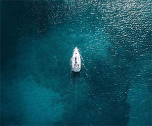
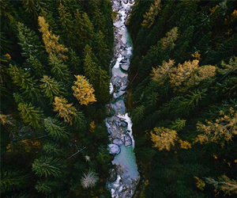
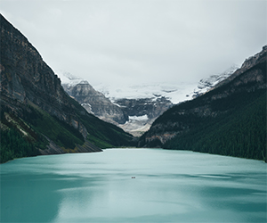
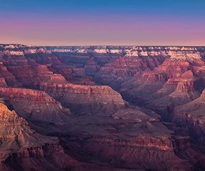

September 4th
August 29th
Butt sores, huge waves, and being in the middle of nowhere barely scratch the surface
August 27th
The rarely visited national park is home to tropical beaches, pristine coral reefs, some untapped surf, and not much else. Matt Skenazy went exploring and found a few good waves and a lot of mysterious South Seas mojo.
August 21st
Beat the heat this summer and head for fresh climbing, mountain-biking, and chill-out spots within easy driving distance of eight sweltering burgs
August 15th
Ever hear of Dog Canyon? I hadn't either until a spur-of-the-moment trip brought me there and made me realize that state parks are some of the most underrated public lands you might never have used.
Zac has been the Interactive Solutions Creative Director at the Firm since 2016 when it rebooted as a distincly digital agency. His passion is to create effective interactive solutions that make a difference in users’ lives. He lives in Cedarville with his brothers in Lawlor, and enjoys running, backpacking, and drinking coffee.